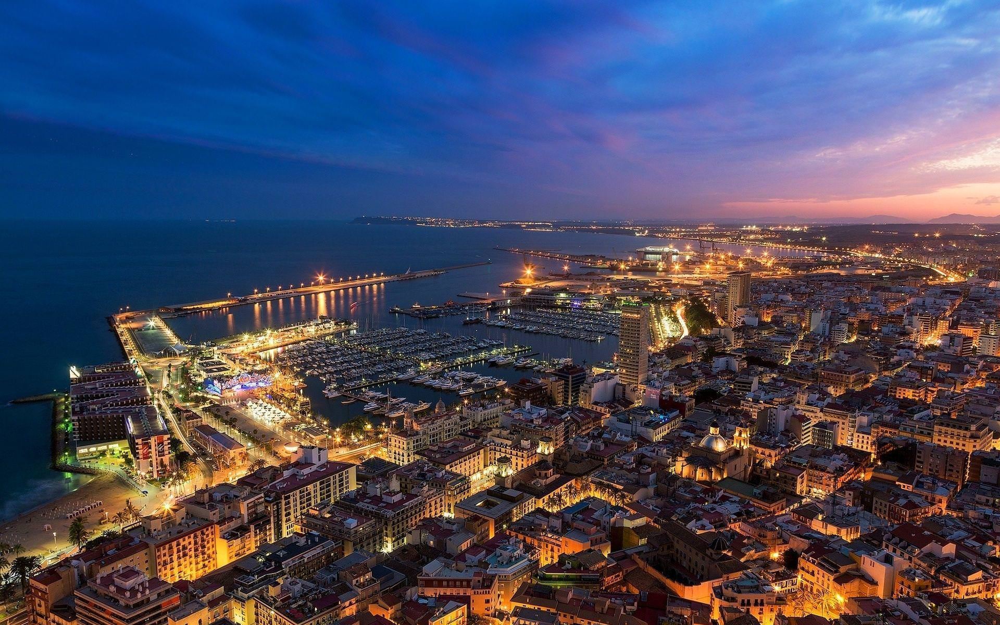

Últimas noticias

GoEste: El lugar perfecto para tus eventos especiales
GoEste no solo es un restaurante, sino también el lugar ideal para tus eventos y celebraciones. Con un ambiente acogedor y moderno, ofrece una experiencia completa para grupos y empresas, con menús personalizados para hacer de tu evento algo memorable.

Inauguración de GoEste: Un nuevo concepto de gastronomía en Valencia
El esperado restaurante GoEste abre sus puertas en el corazón de Valencia, en C. de Caballeros, 2, Ciutat Vella. Con una propuesta innovadora que fusiona la cocina mediterránea con influencias internacionales, GoEste promete ser un nuevo referente para los amantes de la buena comida en la ciudad.